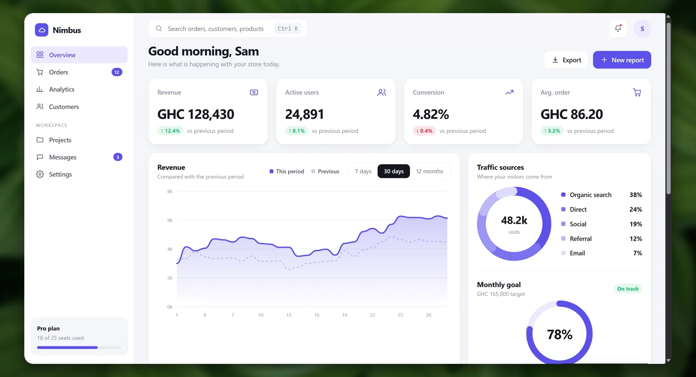

Screen recordings that look edited.
Record like normal. Scrim adds the zooms, the frame, the cursor and the captions, and gives you a script to read from that never shows in the video. Free, forever.
Windows 10 and 11 · Free · No watermark · No account
Why Scrim
Most screen recordings are hard to watch. Tiny text, a lost cursor, long pauses. Scrim fixes all of it while you record.
Same recording. Very different video.
Drag the handle. Left is what you recorded, right is what Scrim made from it.


What's inside
Record. Write. Polish. Share.
Four parts of one app. Each one has a page that shows it working.
Captions and AI
Captions from your voice. Delete a word and it is cut from the video. Bring your own AI key, or run it offline.
Read moreA script that stays hidden
Read from your script while you record. It floats on screen and never appears in the video.
Read moreEditing and the look
Auto zooms, a gliding cursor, backgrounds, frames, trim, text, blur and music.
Read moreExport anywhere
YouTube, TikTok, LinkedIn, GIF, or a step by step guide with screenshots.
Read moreHow it works

01
Record
Pick a screen, a window or a browser tab. Add your mic, PC sound and webcam.
02
Zooms happen on their own
Every click becomes a smooth zoom on a clean background.
03
Captions from your voice
Words light up as you say them. Delete a word and it's cut from the video.
04
Share it anywhere
One click for YouTube, TikTok, LinkedIn, a GIF, or a step by step guide.
keyframes to set
to export anywhere
caption styles
of your videos stay on your PC